1 线性方程组和矩阵
1.1 线性方程组
n个未知数m个方程的线性方程组如下：
上述线性方程组的解取决于系数a和常数项b。
当常数项b=0时，方程组
称为n元齐次线性方程组，当b≠0时，称为n元非齐次线性方程组。
线性方程组的系数和常数项按原位置可以排成数表如下：

对线性方程组的研究，可以转化为对此表的研究。
1.2 矩阵的定义
由m×n个数aij（i=1,2,...,m;j=1,2,...,n)排成的m行n列的数表
称为m行n列的矩阵，简称m×n矩阵，记作
这m×n个数称为矩阵A的元素，简称为元，数aij位于矩阵A的第ｉ行第ｊ列，m×n矩阵A也可记作Am×n。
元素为实数的矩阵称为实矩阵；元素有虚数的矩阵称为复矩阵。
1.2.1 几种特殊的矩阵
（1）行数和列数都等于n的矩阵称为n阶矩阵或n阶方阵，n阶矩阵A也记作An。
（2）只有一行的矩阵A=(a1a2⋯an)称为行矩阵或行向量。
（3）形如以下的矩阵称为对角矩阵（或对角阵），记作A=diag(λ1,λ2,⋯,λn)。
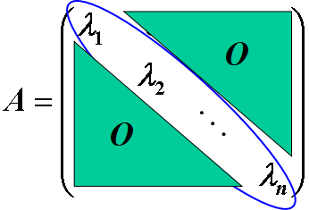
（4）对角阵中的对角线全为1时，此方阵为单位阵。
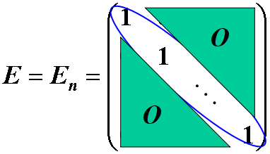
（5）两矩阵的行数相等，列数也相等时，称它们是同型矩阵。若A=(aij)与B=(bij)是同型矩阵，且它们的对应元素相等，即aij=bij(i=1,2,⋯,m;j=1,2,⋯,n)，则称矩阵A和B相等，记作A=B。
（6）元素都是0 的矩阵称为零矩阵，记作O。
不同型的零矩阵不相等。
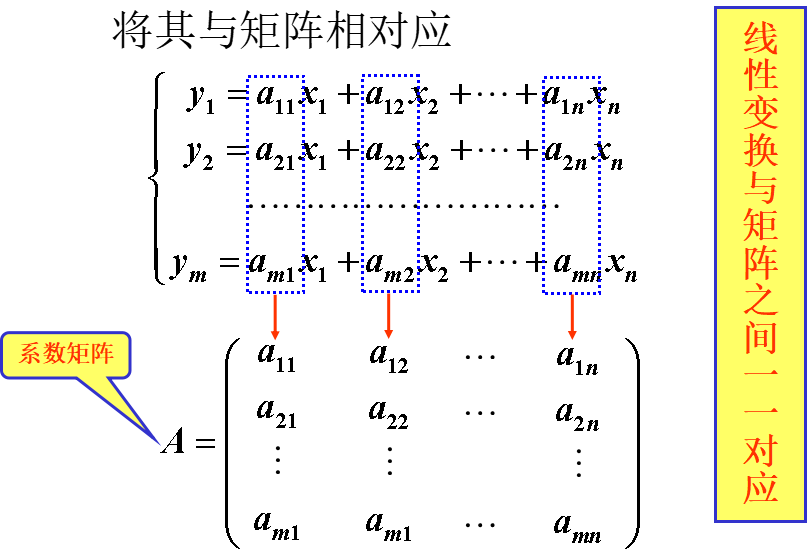
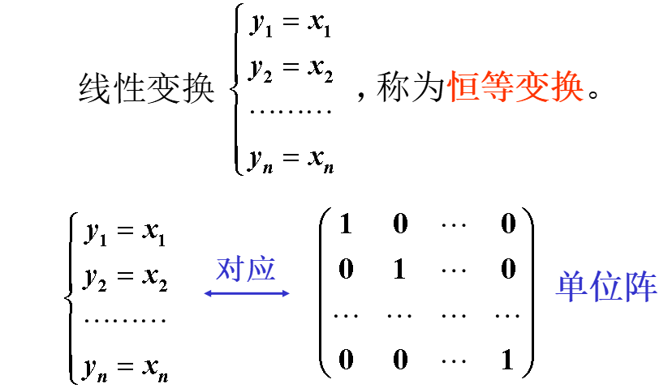
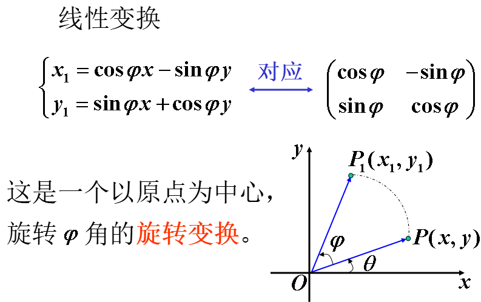
行列式和矩阵有本质的区别：
- 行列式是一个算式，一个数字行列式经过计算得到一个数值，并且行列式的行数和列数一定相等；
- 而矩阵仅仅是一个数表，它的行数和列数可以不同。
2 矩阵的运算
2.1 矩阵的加法
设有两个m×n矩阵A=(aij)和B=(bij)，则矩阵A与B的和记作A＋B，规定为：
注意：两个同型矩阵，才可以相加。
2.2 数与矩阵相乘
数λ与矩阵A=(aij)的乘积，简称数乘，记作λA或Aλ，规定为
注意：数乘矩阵，需要将这个数乘以该矩阵的每个元素，得到的新矩阵与原矩阵同型。
特别地，当λ=−1时，将(−1)A称为A的负矩阵，记作－A，即：
矩阵的加法和数乘运算统称为矩阵的线性运算。
2.3 线性运算的运算律
设A、B和C均为m×n矩阵，λ和μ是数，有如下运算规律：
- 加法交换律：A+B=B+A
- 加法结合律：(A+B)+C=A+(B+C)
- A+(−A)=O
- (λμ)A=λ(μA)
- (λ+μ)A=λA+μA
- λ(A+B)=λA+λB
2.4 矩阵的乘法运算
设A=(aij)是一个m×s矩阵，B=(bij)是一个s×n矩阵，规定矩阵A与矩阵B的乘法是一个m×n矩阵C=(cij)，其中
cij=ai1b1j+ai2b2j+⋯+aisbsj=k=1∑saikbkj
并将此乘积记为C=AB。
注意：只有当第一个矩阵A（左矩阵）的列数等于第二个矩阵B（右矩阵）的行数时，两个矩阵才能相乘，并且乘积矩阵AB的行数等于A的行数，而列数等于B的列数。
2.4.1 乘法运算的运算律
设A、B和C均为矩阵，λ是数，有如下运算规律：
- 乘法的结合律：(AB)C=A(BC)
- λ(AB)=A(λB)
- A(B+C)=AB+AC
- (B+C)A=BA+CA
单位矩阵E在矩阵的乘法中的作用，类似于数1在数的乘法中的作用。
由于矩阵的乘法满足结合律，可定义矩阵的幂：设矩阵A是n阶方阵，定义：
A1=A,A2=A1A1,⋯,Ak=Ak−1A1
其中k是正整数，即Ak是k个A连乘。
特别地，规定A0=E，又设f(x)=a0xm+a1xm−1+⋯+am−1x+am是关于x的一元m次多项式，则
f(A)=a0Am+a1Am−1+⋯+am−1A+amE
是一个n阶方阵，称为方阵A的m次矩阵多项式。
由于矩阵的乘法不满足交换律，所以以前学过的公式，如平方差公式、和或差的平方公式、和或差的立方公式、立方和或差公式等，均不一定成立。
2.5 矩阵的其他运算
2.5.1 转置运算
将矩阵A的行换成同序数的列得到的矩阵，称为A的转置矩阵，记作AT，即：
矩阵AT的(i,j)元就是矩阵A的(j,i)元。
转置矩阵也是一种运算，有如下运算律：
- (AT)T=A
- (A+B)T=AT+BT
- (λA)T=λAT
- (AB)T=BTAT
同时称满足AT=A的矩阵为对称矩阵。
2.5.2 矩阵的行列式
由n阶方阵A的元素所构成的行列式（各元素的位置不变），称为方阵A的行列式，记作∣A∣或detA。
由A确定|A|是一种运算，有如下运算律：
- ∣∣∣∣AT∣∣∣∣=∣A∣，这个相当于使用了行列式的性质，行列式的行和列都是等价的
- ∣λA∣=λn∣A∣，相当于对行列式的每一行都乘以一个数，由行列式的性质得，可以把每一行中的这个数给提出来，然后一共有n行，就变成了λn
- ∣AB∣=∣A∣∣B∣，两个矩阵乘积的行列式等于两个矩阵的行列式的乘积，这个不知道为啥…
2.5.3 伴随矩阵
行列式|A|的各个元素的代数余子式Aij所构成的如下矩阵

称为矩阵A的伴随矩阵，简称伴随阵。
余子式和代数余子式的区别是代数余子式带正负号，即Aij=(−1)i+jMij。
设A∗是A的伴随矩阵，故A∗=A∗A=∣A∣E。
证明：由伴随矩阵的定义可得

2.6 总结
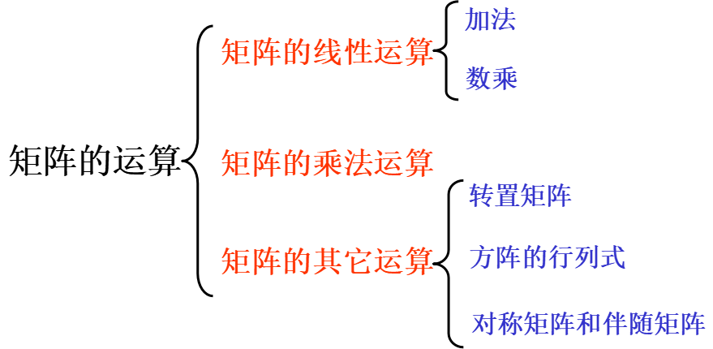
3 逆矩阵
3.1 逆矩阵的概念
对于n阶矩阵A，如果存在一个n阶矩阵B，使得
AB=BA=E
则称矩阵A可逆，并将矩阵B称为A的逆矩阵，简称逆阵。
若A是可逆的，则A的逆矩阵是唯一的。A的逆阵记作A−1。
【定理1】若矩阵A可逆，则∣A∣=0。
3.2 逆矩阵的求法
若∣A∣=0，则矩阵A可逆，且
A−1=∣A∣1A∗
其中A∗为矩阵A的伴随矩阵。
- 当∣A∣=0时，矩阵A称为奇异矩阵
- 当∣A∣=0时，矩阵A称为非奇异矩阵
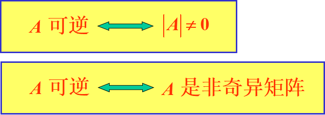
逆阵满足下述运算律：
（1）若A可逆，则A−1亦可逆，且
(A−1)−1=A,∣∣∣A−1∣∣∣=∣A∣1
（2）若A可逆，数λ=0，则λA可逆，且
(λA)−1=λ1A−1
（3）若A，B为同阶可逆矩阵，则AB可逆，且(AB)−1=B−1A−1
（4）若A可逆，则AT亦可逆，且(AT)−1=(A−1)T
3.3 逆矩阵的初步应用
设f(A)=a0Am+a1Am−1+⋯+am−1A+amE是矩阵A的m次多项式：
（1）若A=PΛP−1，则Ak=PΛkP−1，从而
（2）若Λ=diag(λ1,λ2,⋯,λn)为对角阵，则Λk=diag(λ1k,λ2k,⋯,λnk)，从而
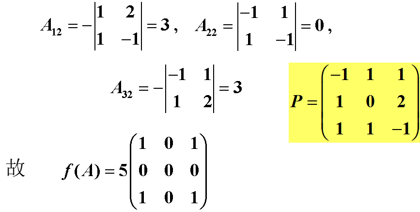
3.4 总结
- 逆矩阵的概念
- 逆矩阵存在的条件
- 逆矩阵的计算
4 克拉默法则
4.1 克拉默法则
之前介绍了使用二阶行列式求解两个二元线性方程组成的方程组，现在进行推广，介绍求解由n个n元线性方程组成的方程组的克拉默法则。
含有n个未知数x1,x2,⋯,xn，n个线性方程的方程组：
与二、三元线性方程组类似，它的解可以用n阶行列式表示，即有若线性方程（1）的系数行列式不等于零，即
那么方程组（1）有唯一解：
x1=DD1,x2=DD2,x3=DD2,⋯,xn=DDn
其中Dj(j=1,2,⋯,n)是将系数行列式的第j列的元素用方程组右端的常数项代替后，得到的n阶行列式，即：
4.2 重要定理
4.2.1 定理1
若线性方程组（1）的系数行列式D=0，则（1）一定有解，且解是唯一的。
4.2.2 定理2
若线性方程组（1）无解或有两个不同的解，则（1）的系数行列式D=0。
方程组（1）右端的常数项b1,b2,⋯,bn不全为零时，线性方程组（1）称为非齐次线性方程组；当b1,b2,⋯,bn全为零时，线性方程组（1）称为齐次线性方程组。
对于齐次线性方程组
x1=x2=⋯=xn=0一定是它的解，这个解称为齐次线性方程组（2）的零解；若存在一组不全为零的数是（2）的解，称其为（2）的非零解。
4.2.3 定理3
若线性方程组（2）的系数行列式D=0，则（2）只有零解，没有非零解。
4.2.4 定理4
若线性方程组（2）有非零解，则（2）的系数行列式D=0。
4.3 总结
（1）利用克拉默法则解线性方程组的条件：
- 方程的个数=未知数的个数
- 系数行列式D=0
（2）对非齐次线性方程组
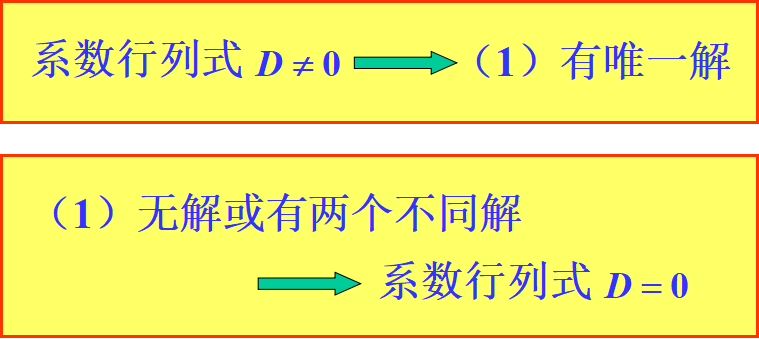
（3）对齐次线性方程组
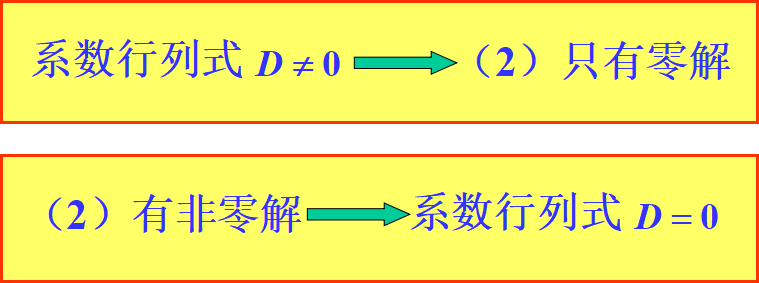
5 矩阵分块法
5.1 矩阵的分块
对于行数和列数较高的矩阵A，运算有时会采用分块法，使大矩阵的运算转化成小矩阵的运算。
将矩阵A用若干条纵线和横线分成许多小矩阵，每个小矩阵称为A的子块，以子块为元素的形式上的矩阵称为分块矩阵。
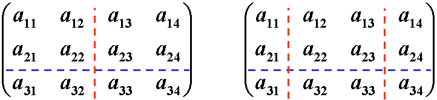
5.2 分块矩阵的运算规则
分块矩阵的运算规则与普通矩阵的运算规则类似。
（1）设矩阵A与B的行数相同、列数也相同，采用相同的分块法，有
其中Aij与Bij的行数相同、列数也相同，则
（2）设A=⎝⎜⎜⎛A11⋮As1⋯⋯A1r⋮Asr⎠⎟⎟⎞，λ为数，则
（4）设A=⎝⎜⎜⎛A11⋮As1⋯⋯A1r⋮Asr⎠⎟⎟⎞，则
（5）设A是n阶矩阵，若A的分块矩阵只有在对角线上有非零子块，其余子块均为零矩阵，且在对角线上的子块都是方阵，即
其中Ai(i=1,2,⋯,s)都是方阵，称A为分块对角阵。分块对角阵的行列式有下述性质：
∣A∣=∣A1∣∣A2∣⋯∣As∣
由此可知，若∣Ai∣=0(i=1,2,⋯,s)，有

 微信
微信 支付宝
支付宝